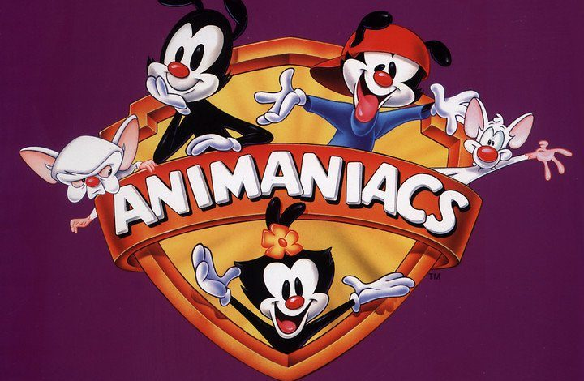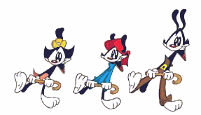
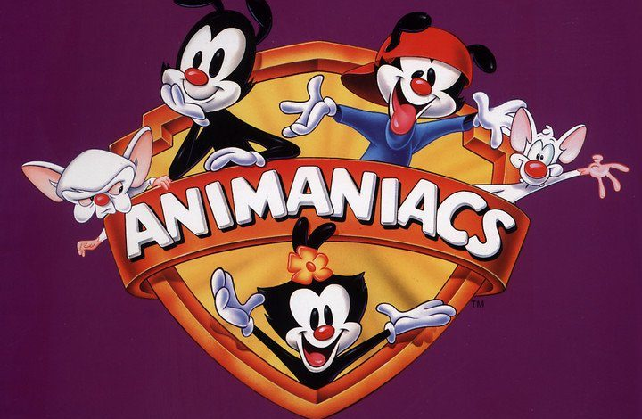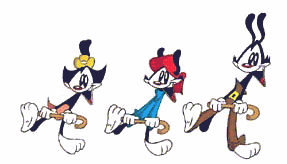
Animaniacs, un programa infantil de los años 90´s, donde se encuentran una variedad de dibujos animados compartiendo escenarios y aventuras distintas pero siempre en un mismo universo. Podemos encontrar una variedad de dibujos animanos como Slapy la ardilla, los palomos, pinky y cerebro y los mas destacados, los hermanos WARNER de la empresa Warned, encargada de producir esta y muchas mas entregas tales como los LOONETOWS.
| Nombre | Foto | Descripcion |
| Yakko Warner | 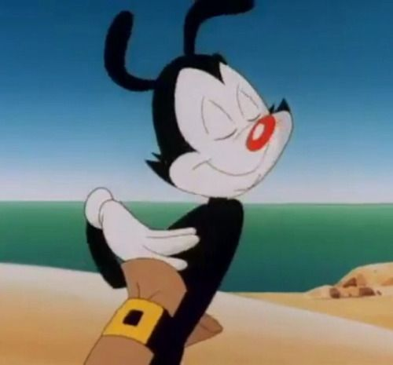 | Yakko es el hermano mayor, carismatico, ocurrente y travieso, cuida de sus dos hermanos pequeños, Wakko y Dot, Yakko no solo es divertido y travieso, tambien es un excelente hermano mayor y un poco mas maduro que sus dos hermanos menores. |
| Wakko Warner | 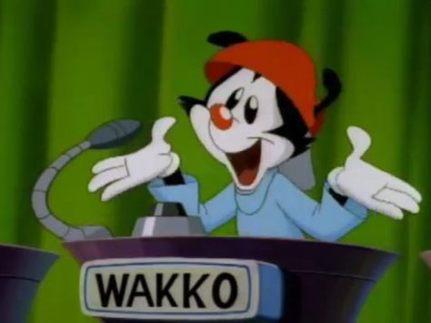 | Wakko es el segundo hermano, siempre tiene hambre asi que muchas veces este se ve comiendo una variedad de comidas y objetos, es el mas inquieto de los tres hermanos, sin mencionar que le encantan los chistes de eruptos. |
| Dot Warner | 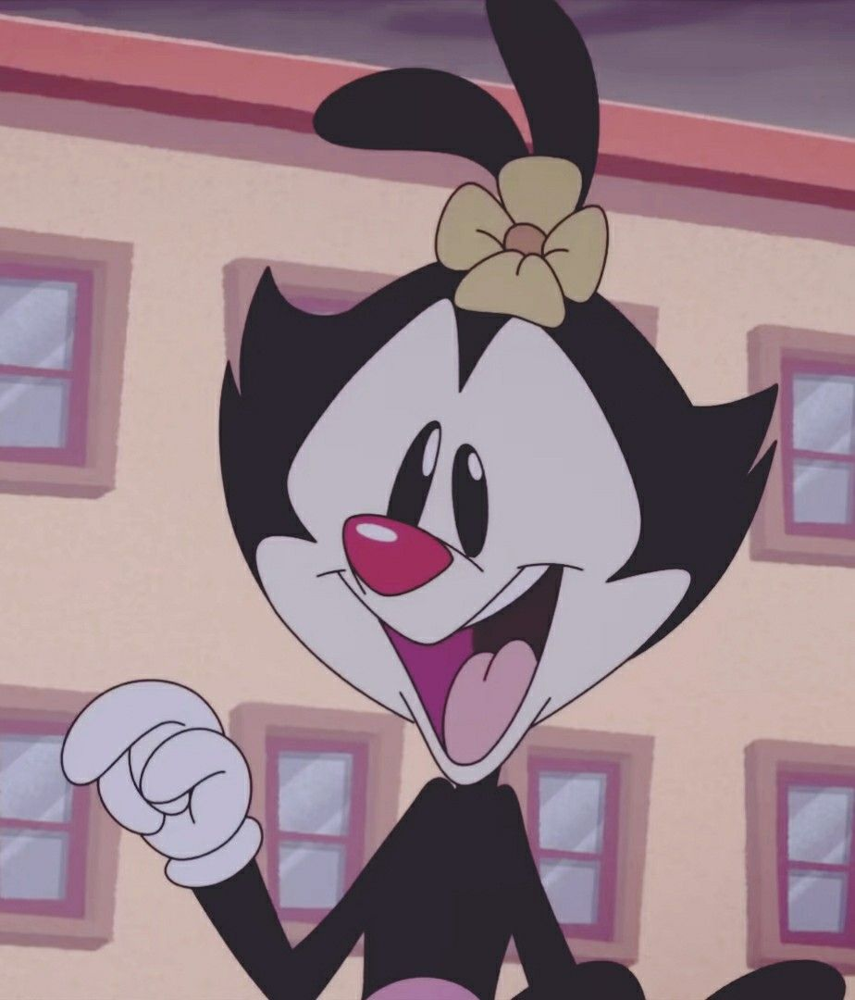 | Dot es la hermana menor, es traviesa, coqueta y es adorable, adora mucho a sus hermanos, aun que algunas veces quisiera la compañia de otra mujer, ella es feliz con sus dos hermanos mayores. |
| El doctor scratchansniff | 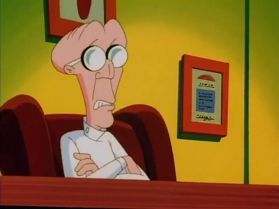 | El doctor scratchansniff es el sicologo de la empresa Warner, encargado de ayudar de forma sicologica a las grandes estrellas que pasean por la empresa, pero el principal encargado de los hermanos warner, los cuales casi siempre llegan a sacar de quisio al doctor. |
| Slappy Squirrel | 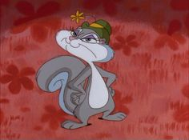 | Slappy, o mejor concida como "La ardilla Slappy", es una ardilla de tercera edad que esta retirada del oficio en aparecer como un anti heroe en las tiras comicas, la cual molestaba y a su vez, escapaba de los malos que le querian hacer algún daño, ella junto con su sobrino Skippy viven aventuras iniciando por su casa en el arbol de bellotas. |
| Skippy Squirrel | 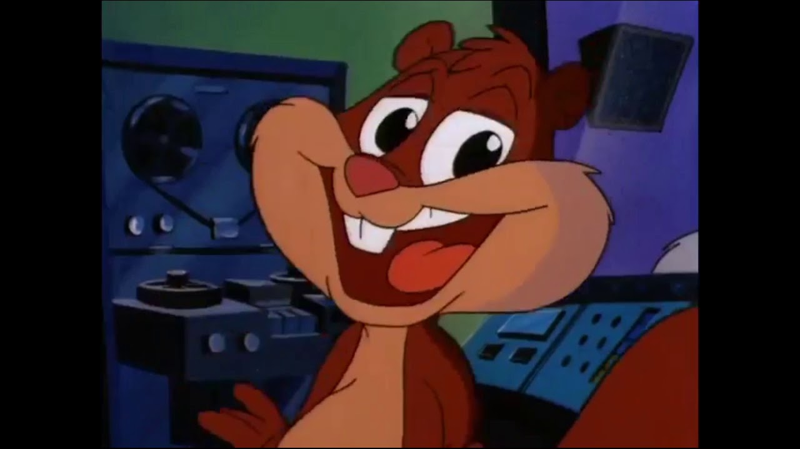 | Skippy es el sobrino de la ardilla Slappy, quien es un niño educado, gracioso y muy cariñoso con su tia Slappy a quien la ve con ojos de grandesa y admiración. |
| Ralph el guardia | 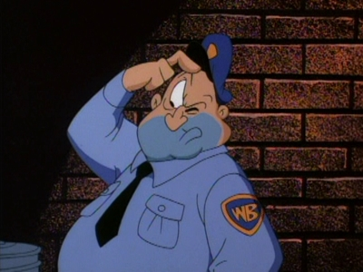 | Ralhp es el guardia encargado de mantener el orden en las instalaciones de la empresa Warner, aun que su principal objetivo es cuidar que los hermanos warner no hagan destrosos y algun dia, poder capturarlos y encerrarlos en el tanque de agua vacio, hogar de los hermanos warner. |
| Cerebro | 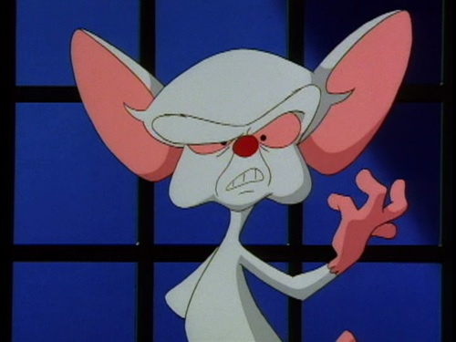 | Cerebro es una raton de laboratorio cuya inteligencia es comparada con la de un humano desarrollado, esto debido a cantidades enormes donde el ah sido expuesto a diversas pruebas cientificas; vive dentro de una jaula con su compañero y leal amigo Pinky, el cual ayuda a cerebro a que todas las noches este trate de dominar el mundo. |
| Pinky | 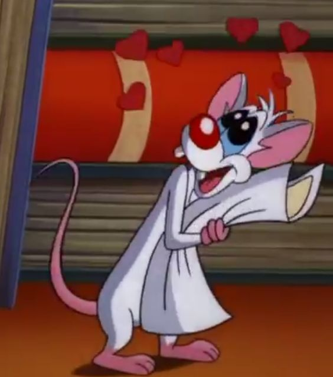 | Pinky es un segundo raton de laboratorio el cual, tambien ah sido expuesto a diversas practicas cientificas, solo que a diferencia de cerebro, pinky no esta cuerdo, tambien es amigo y ayudante de cerebro el cual siempre acompañara a este mismo con su plan de dominar el mundo, y todas las noches este siempre preguntara a cerebro "Cerebro, ¿Qué haremos esta noche?" a lo que cerebro siempre respondera "Lo mismo que hacemos todas las noches Pinky, ¡Tratar de conquistar al mundo!" y aun que muchos de sus planes llegue a fallar o hacercarse al objetivo, Pinky siempre apoyara a su amigo cerebro. |